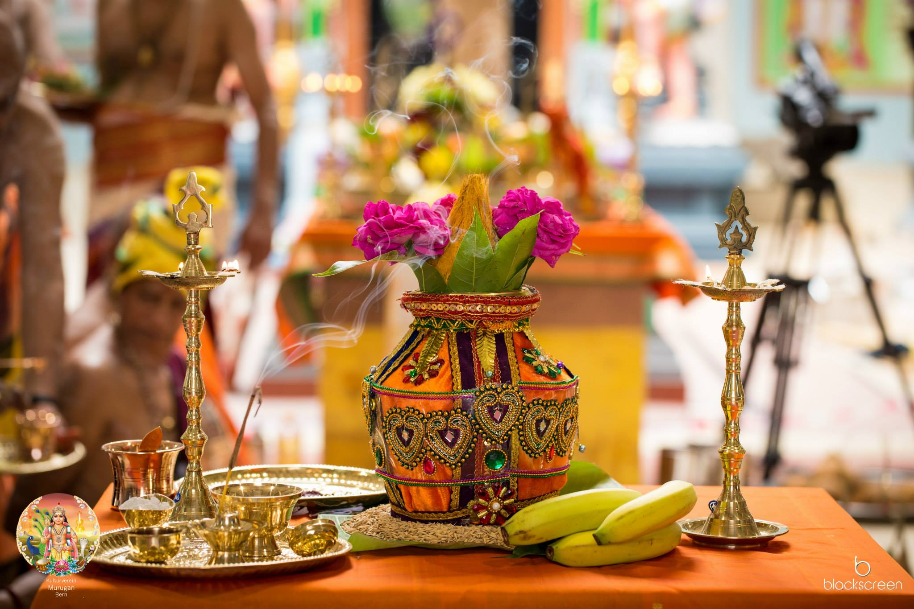

Sri Kalyana Subramaniar Tempel Bern Toffen
Home
NEWS
- The new website is now online.
Join us on Facebook, Instagram and YouTube!
Story
 Lord Murugan is the second son of Lord Shiva. It is an image of human perfection. The Tamil word "Murugan" means beauty and youthfulness and Murugan is the God with these aspects. Subramaniam, Kanthan, Velan, Kadampan, Karthigesan, Kumaran and Saravanan are the other names of Murugan. And each name has its own special meaning. Arumugan is another name for Lord Murugan. It means the one with six faces. Lord Murugan is often depicted on a peacock sitting that captivates often seen a snake. He has his consorts Valli and Theivanai keeps with him, the Vel in the hand and has a Seval (Cockeral) on his battle flag. Through the worship Lord Murugan, we will, beauty, youthfulness and courage blessed with jnanam (knowledge).
Lord Murugan is the second son of Lord Shiva. It is an image of human perfection. The Tamil word "Murugan" means beauty and youthfulness and Murugan is the God with these aspects. Subramaniam, Kanthan, Velan, Kadampan, Karthigesan, Kumaran and Saravanan are the other names of Murugan. And each name has its own special meaning. Arumugan is another name for Lord Murugan. It means the one with six faces. Lord Murugan is often depicted on a peacock sitting that captivates often seen a snake. He has his consorts Valli and Theivanai keeps with him, the Vel in the hand and has a Seval (Cockeral) on his battle flag. Through the worship Lord Murugan, we will, beauty, youthfulness and courage blessed with jnanam (knowledge).
Origin
Exactly the origin is unknown, there is neither an official nor a detectable founder founding date. Traces of Hinduism but go back several thousand years. For Hindus, but their faith is sanatana-dharrna, which means "eternal religion".
Theology
The worship of nature deities (pantheism), the belief in many gods (polytheism), the indivisible unity of all creation and all the creatures (monism) and the belief in a God who rules over all (monotheism).
Philosophy
For Hindus, the time is cyclical, which means that they have neither a beginning nor an end. It is, like the seasons, an eternal cycle of different ages (yugas). The soul is immortal and migrated according to their actions (karma) through different forms of life. The well-known as the reincarnation concept called the Hindu samsara, the cycle of birth and death. Your goal is to become free from this cycle by god conscious or spiritual activity to achieve (moksha), to each according to denomination eternity (nirvana) or the Kingdom of God.
Deities
These are universal rulers, who are responsible for all aspects of life: fertility, health, wealth, power, death, etc. They also master all the elements such as earth, water, fire, air and space.
Among the most power. Brahma, the creator of the material world, and Vishnu as preserver of the universe. Also very popular is the elephant-headed Ganesha who is worshiped in order to remove the obstacles in life. Lakshmi, the goddess of fortune, receives tribute from those who desire wealth and welfare. Most Popular Krishna. His charming sweetness is sung in many hymns and his philosophical dialogue in the Bhagavad-gita is considered the best known text of Hinduism. Particularly noteworthy are the avatars, phenomena of individual deities on Earth. Many texts describe the dasha-avataras, the ten "incarnations" of Vishnu.

Fonts
Almost as numerous as the deities are the writings of the Hindus. Among the oldest are mainly focused on ritual features four basic texts, the Vedas. There are over a hundred Upanishads which contain philosophical dialogues. Also known are the numerous Puranas. They describe the theology and philosophy in the form of stories. Very popular are the two epic works (poetic epics) Ramayana and Mahabharata, which includes the Bhagavad-gita is one that summarizes the Indian doctrine of God.
Hindu-Society
An important link is the sarnskaras, religious ceremonies, beginning before conception and are carried out until after the death of family members. They are intended to illustrate the corresponding soul and accompany it with the blessings of a particular deity.
Tempel
 Striking in India are the numerous temples - from small shrines on a street corner or gigantic art works made of granite and marble. The holiest are the consecrated statues of those deities, Murti or archavigraha that are located inside the temple. They will only be honored if they were "revived" by a traditional initiation ceremony (prang-Pratishta) with the divine power and grace. Pious Hindus visit "their" temple daily or at least once a week.
Striking in India are the numerous temples - from small shrines on a street corner or gigantic art works made of granite and marble. The holiest are the consecrated statues of those deities, Murti or archavigraha that are located inside the temple. They will only be honored if they were "revived" by a traditional initiation ceremony (prang-Pratishta) with the divine power and grace. Pious Hindus visit "their" temple daily or at least once a week.
Spread
There are in the world about one billion Hindus. Approximately seventy percent of India's population belong to this religion. There are some countries where a considerable part of the population are Hindus: Nepal, Indonesia (Bali), Mauritius, the Fiji Islands, Sri Lanka (Tamils). Not only Hindus who migrated to all continents, but also a small number of Western people practicing aspects of Hinduism.
Conclusion
Like all religions Hinduism is a religion that rises above the material life of the world. He gives people self-responsibility, but passes them on by rituals, sacred writings, priests and religious festivals to understand all beings, nature and the cosmos as a natural unity created by God. In Hinduism, it is important to recognize this harmony and to integrate them in everyday life. Religion, the connection to God is always and everywhere experienced a Hindu.